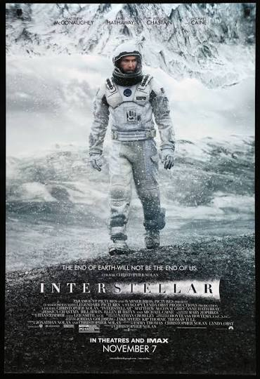

Joseph Cooper
Interpretado por Matthew McConaughey
Antiguo piloto e ingeniero que se convierte en el líder de una misión espacial. Su principal motivación es salvar a la humanidad y proteger el futuro de sus hijos.

CIENCIA FICCIÓN · AVENTURA ESPACIAL
En un futuro donde la Tierra enfrenta una grave crisis ambiental, un grupo de exploradores emprende una misión a través de un agujero de gusano para encontrar un planeta habitable y asegurar la supervivencia de la humanidad.
Interstellar
2014
Christopher Nolan
Jonathan Nolan y Christopher Nolan
Estados Unidos y Reino Unido
169 minutos
Ciencia ficción, drama y aventura
Matthew McConaughey, Anne Hathaway, Jessica Chastain y Michael Caine
Hoyte van Hoytema
Hans Zimmer
En un futuro cercano, la Tierra atraviesa una crisis ambiental que amenaza la producción de alimentos y la supervivencia de los seres humanos. Cooper, un antiguo piloto de la NASA que ahora trabaja como agricultor, vive con sus hijos en una sociedad que enfrenta un futuro incierto.
Después de descubrir unas coordenadas misteriosas, Cooper llega a una instalación secreta de la NASA. Allí conoce un proyecto que busca encontrar nuevos mundos habitables mediante la exploración espacial.
Cooper acepta dirigir una misión junto a un equipo de científicos y astronautas. Para lograr su objetivo, deberán viajar a través de un agujero de gusano cercano a Saturno y explorar planetas ubicados en otra galaxia.
Durante el viaje, los personajes enfrentan peligros desconocidos, los efectos de la relatividad del tiempo y decisiones difíciles. Mientras tanto, Cooper intenta cumplir su misión sin perder la esperanza de volver a ver a su familia.
Interpretado por Matthew McConaughey
Antiguo piloto e ingeniero que se convierte en el líder de una misión espacial. Su principal motivación es salvar a la humanidad y proteger el futuro de sus hijos.
Interpretada por Anne Hathaway
Científica y astronauta que forma parte del equipo encargado de explorar posibles planetas habitables. Combina sus conocimientos científicos con una profunda sensibilidad humana.
Interpretada de adulta por Jessica Chastain
Hija de Cooper. Es una persona inteligente y decidida que desarrolla un gran interés por la ciencia. Su relación con su padre es fundamental para el desarrollo de la historia.
Interstellar pertenece al subgénero de ciencia ficción porque desarrolla una historia basada en conceptos científicos, avances tecnológicos y posibilidades futuras de la exploración espacial. La película combina teorías de la física con elementos imaginarios para presentar una aventura sobre el destino de la humanidad.
Ahora conoceremos a un equipo de héroes que debe defender la Tierra de una amenaza extraterrestre.